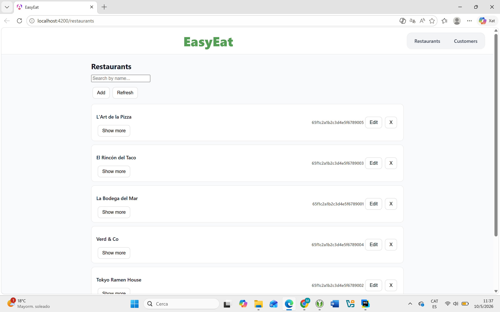
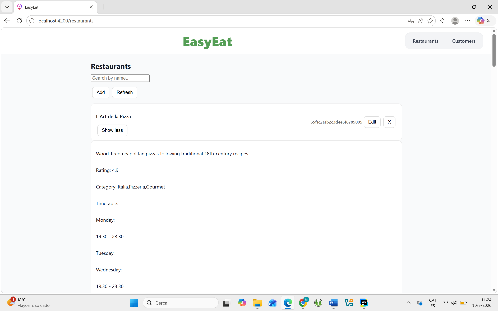
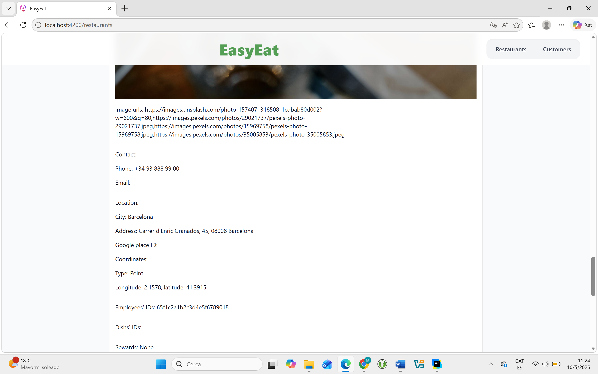
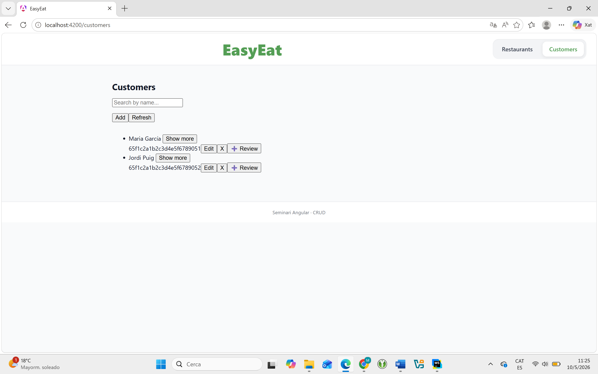
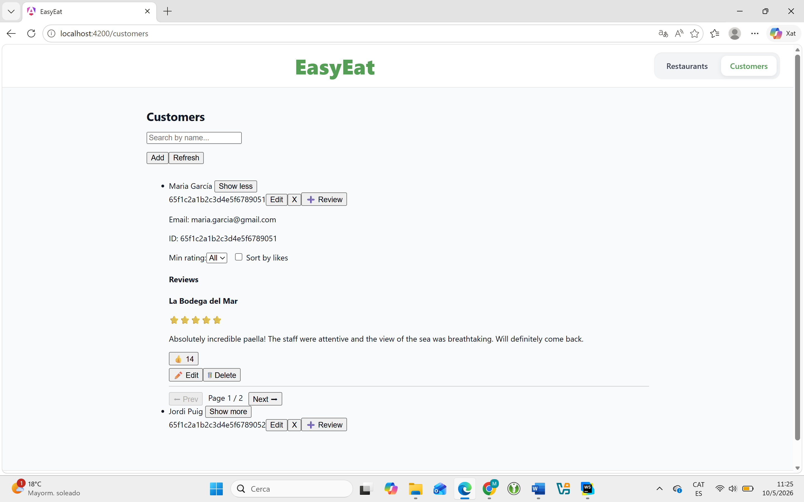

Mentre l'Alicia pensa en els seus clients, en l'altra banda hi ha una realitat tècnica que ja existia abans que ella s'hi fixés: el sistema EasyEat. Restaurants registrats. Clients creats. Dades preparades.
No s'ha de construir des de zero. Ja hi és. El que cal ara és entendre qui el manté i com funciona per dins.

El sistema no és conceptual. Té restaurants amb noms, horaris, categories, imatges i coordenades. Té clients registrats. Té visites i ressenyes. Quan parlem del Backoffice, parlem d'una interfície que opera sobre dades reals que ja existeixen.
L'usuari del Backoffice no és l'Alicia. No és un client que fa una reserva ni algú que mira la carta.
És l'administrador intern del sistema EasyEat. La persona que, entre bastidors, s'assegura que les dades siguin correctes, que cap restaurant tingui un horari obsolet, que cap client hagi quedat orfe d'informació.
Dues seccions. Res més. El Backoffice és deliberadament senzill perquè la seva funció és clara: mantenir, corregir, ajustar, supervisar. No és el centre del sistema. És la capa invisible que fa que el centre funcioni.
Un restaurant no és un registre estàtic. Els horaris canvien. Les categories s'actualitzen. Una imatge nova, un número de telèfon diferent, una nova adreça. El restaurant és una entitat viva que requereix manteniment continu.
L'administrador pot obrir qualsevol restaurant de la llista, veure tots els detalls i editar el que calgui, camp per camp.


Cada customer és una identitat existent al sistema. Té nom, email, historial. I té una cosa especialment valuosa per al projecte de fidelització: les seves ressenyes.
L'administrador pot consultar cada client, editar les dades bàsiques quan calgui, i veure les ressenyes que ha deixat als restaurants.


El Backoffice no és un taulell de control ni un dashboard executiu. No genera clients. No crea restaurants. No inventa dades.
És la interfície de manteniment. La capa que garanteix que allò que el sistema presenta als clients sigui fidel a la realitat que existeix fora de la pantalla.

El Backoffice no crea el sistema.
El manté coherent.
Quan el sistema creix —més restaurants, més clients, més visites, més ressenyes— el desordre creix amb ell. Una categoria mal escrita. Un horari que no s'ha actualitzat. Un restaurant amb la imatge obsoleta.
El Backoffice és la capa invisible que absorbeix aquest desordre. L'administrador entra, corregeix, ajusta i surt. El sistema continua coherent. L'Alicia continua confiada en les dades que veu.